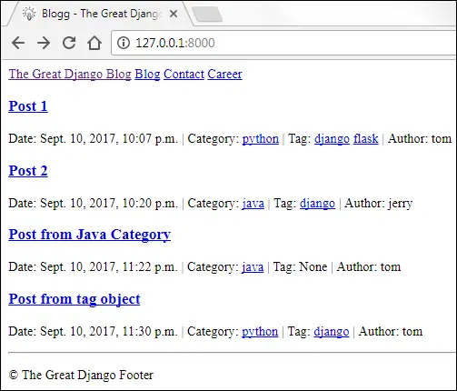
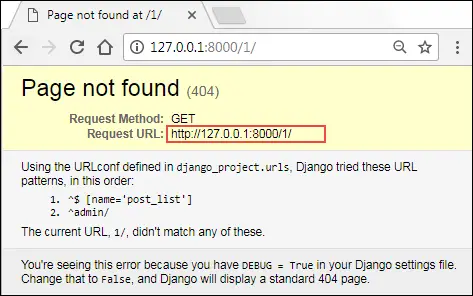
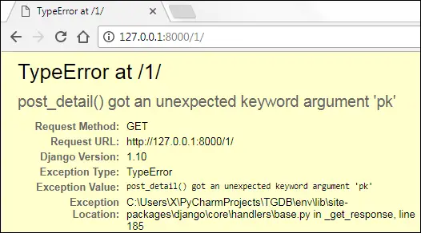
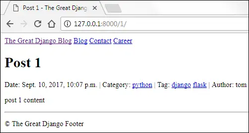
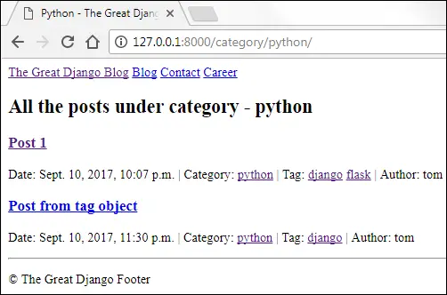
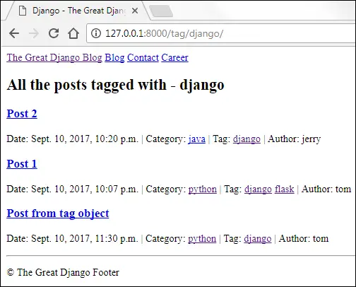

Building Blog The First Steps
Last updated on July 27, 2020
We now know how to create Model, Templates, and Views in Django, lets put this knowledge to use and create some pages for our site - The Great Django Blog. In this lesson, we will create the following pages.
- Post List Page - to display a list of blog posts.
- Post Detail Page - to display post in detail.
- Category Page - to display a list of posts under a particular category.
- Tag Page - to display a list of posts tagged with a particular tag.
Creating Post List Page #
Open views.py in the blog app and delete today_is() view function. Then add a new view function called post_list() below the index() view as follows:
TGDB/django_project/blog/views.py
1 2 3 4 5 6 7 8 9 10 11 12 13 | from django.http import HttpResponse
from django.shortcuts import render
from .models import Author, Tag, Category, Post
def index(request):
return HttpResponse("Hello Django")
# view function to display a list of posts
def post_list(request):
posts = Post.objects.all()
return render(request, 'blog/post_list.html', {'posts': posts})
|
Let's step through the changes:
In line 3, we are importing
Author,Category,TagandPostmodels frommodels.pyfile.In line 12, we are using
all()method of theobjectsmanager to fetch all thePostobjects from the database.In line 13, we are using
render()method to return a response to the user.
Let's create a new base template named base.html for our blog app inside blog/templates/blog directory and add the following code to it.
TGDB/django_project/blog/templates/blog/base.html
1 2 3 4 5 6 7 8 9 10 11 12 13 14 15 16 17 18 19 20 21 22 23 24 25 26 27 28 29 30 31 32 33 34 35 | <!DOCTYPE html>
<html>
<head>
<title>{% block title %}The Great Django Blog{% endblock %}</title>
</head>
<body>
<div class="navbar">
<div class="section-inner clearfix">
<nav>
<a href="/">The Great Django Blog</a>
<a href="#">Blog</a>
<a href="#">Contact</a>
<a href="#">Career</a>
</nav>
</div>
</div>
{% block content %}
{% endblock %}
{% block footer %}
<div class="footer">
<div class="section-inner clearfix">
<hr>
<p>© The Great Django Footer</p>
</div>
</div>
{% endblock %}
</body>
</html>
|
Create a child template called post_list.html in the blog app (i.e in the blog/templates/blog directory) and add the following code to it.
TGDB/django_project/blog/templates/blog/post_list.html
1 2 3 4 5 6 7 8 9 10 11 12 13 14 15 16 17 18 19 20 21 22 23 24 25 26 27 28 29 30 31 32 33 34 | {% extends "blog/base.html" %}
{% block title %}
Blogg - {{ block.super }}
{% endblock %}
{% block content %}
<div class="content">
<div class="section-inner clearfix">
{% for post in posts %}
<h3>
<a href="http://127.0.0.1:8000/{{ post.pk }}/">{{ post.title|capfirst }}</a>
</h3>
<p class="post-info">
<span>Date: {{ post.pub_date }} </span> |
<span>Category: <a href="http://127.0.0.1:8000/category/{{ post.category.slug }}">{{ post.category.name }}</a></span> |
<span>Tag:
{% for tag in post.tags.all %}
<a href="http://127.0.0.1:8000/tag/{{ tag.slug }}">{{ tag.name }}</a>
{% empty %}
None
{% endfor %}
</span>
</p>
{% empty %}
<p>There are no posts</p>
{% endfor %}
</div>
</div>
{% endblock %}
|
Here are few things to note about this template:
- The outer
fortag (line 12) loops through all the post and innerfortag (line 20) loops through all the post's tags. Next, we are creating the following three links in the template:
The first link (line 14) points to the post detail page. Here is how it works:
When the user visits
http://127.0.0.1:8000/1/, the post whose primary key is 1 is displayed to the user. Similarly, when the user visitshttp://127.0.0.1:8000/2/, the post whose primary key is 2 is displayed to the user.The second link (line 18) points to Post by Category page. Here is how it works:
When the user visits
http://127.0.0.1:8000/category/python/, all posts under categorypythonis displayed to the user. Similarly, when the user visitshttp://127.0.0.1:8000/category/java/, all posts under categoryjavais displayed to the user.The third link (line 21) point to Posts by Tag page. Here is how it works:
When the user visits
http://127.0.0.1:8000/tag/django/, all posts under tagdjangois displayed to the user. Similarly, when the user visitshttp://127.0.0.1:8000/tag/flask/, all posts under tagflaskis displayed.
Just like most blogging sites, we will show a list of post on the homepage. Currently, the homepage of our site shows a 404 error. Let's change that. Open urls.py inside the blog app. Delete todays_time and blog_index URL patterns and add post_list URL pattern as follows.
TGDB/django_project/blog/urls.py
1 2 3 4 5 6 | from django.conf.urls import url
from . import views
urlpatterns = [
url(r'^$', views.post_list, name='post_list'),
]
|
Open sitewide urls.py file at TGDB/django_project/django_project, it should look like this:
TGDB/django_project/django_project/urls.py
1 2 3 4 5 6 7 | from django.conf.urls import url, include
from django.contrib import admin
urlpatterns = [
url(r'^blog/', include('blog.urls')),
url(r'^admin/', admin.site.urls),
]
|
Change the URL pattern in line 5 to:
TGDB/django_project/django_project/urls.py
url(r'', include('blog.urls')),
Now visit http://127.0.0.1:8000/, you should see a list of blog posts like this:

Sure this design is not going to win any awards but at least we are getting somewhere. We will add CSS later.
Right now the post detail URL is not mapped to any view function, so If you click on the post link you will get an HTTP 404 error.

We are creating post detail page in the next section.
Creating Post Detail Page #
Our post detail page displays a post in detail. To fetch a particular blog post from the database we need to know the primary key of the post.
Let's add a new view function called post_detail() after post_list() function as follows:
TGDB/django_project/blog/views.py
1 2 3 4 5 | #...
# view function to display a single post
def post_detail(request):
post = Post.objects.get(pk=pk)
return render(request, 'blog/post_detail.html', {'post': post})
|
Next, create a new template called post_detail.html with the following code.
TGDB/django_project/blog/templates/blog/post_detail.html
1 2 3 4 5 6 7 8 9 10 11 12 13 14 15 16 17 18 19 20 21 22 23 24 25 26 27 28 29 30 31 | {% extends "blog/base.html" %}
{% block title %}
{{ post.title|capfirst }} - {{ block.super }}
{% endblock %}
{% block content %}
<div class="content">
<div class="section-inner clearfix">
<h1>{{ post.title|capfirst }}</h1>
<p class="post-info">
<span>Date: {{ post.pub_date }} |</span>
<span>Category: <a href="http://127.0.0.1:8000/category/{{ post.category.slug }}">{{ post.category.name }}</a></span> |
<span>Tag:
{% for tag in post.tags.all %}
<a href="http://127.0.0.1:8000/tag/{{ tag.slug }}">{{ tag.name }}</a>
{% empty %}
None
{% endfor %}
</span>
</p>
<p>
{{ post.content }}
</p>
</div>
</div>
{% endblock %}
|
We have two problems now:
- How can we get a single URL pattern to recognize both the
http://127.0.0.1:8000/1/andhttp://127.0.0.1:8000/2/requests? - How do we access the primary key present in the URLs (like
http://127.0.0.1:8000/2/) in our views?
Let's start with the first one.
To match http://127.0.0.1:8000/1/ we can use the regular expression r'^1/$'. Similarly to match http://127.0.0.1:8000/2/ we can use r'^2/$'. At first, you might think - We can solve this problem by creating a separate view function for each URL pattern.
1 2 3 4 5 | urlpatterns = [
url(r'^1/$', views.get_first_post),
url(r'^2/$', views.get_second_post),
url(r'^3/$', views.get_third_post),
]
|
The problem with this approach is that it doesn't scale very well. If you have 100 posts then you have to create 100 URLs patterns and 100 view functions for it.
The key to solving this problem is to use \d character. Special characters like \d are called Meta Characters in Regular Expression. These characters have some special meaning instead of their literal meaning. The \d matches a single digit (0-9).
If you want to match one or more digits just append + to \d. The regular expression \d+ matches 1, 100, 342, 1000 and so on.
So our new URL pattern r'^\d+/$' matches strings like 1/, 409/, 99999/ and so on. It will not match patterns like a122/, 1024a/ and 10a00/.
Our first problem is now solved. Let's now shift our attention to the second problem - How do we access the primary key present in URL inside our view function?
There are two ways to solve this problem. The first method consists of a little bit of trickery and the second one is pretty easy.
Recall that the request parameter of a view function contains all the information about the current web request that has triggered a view. The request object has an attribute called path_info which returns the portion of the URL after the hostname. For example, if the user requests http://127.0.0.1:8000/1/ then request.path_info would return /1/. Now, you just need to strip leading and trailing slashes and you are done.
The other solution is easy and thus recommended. To pass the primary key to the view function we use something called named regular-expression group or simply named group. We create named group using the following syntax:
(?P<name>pattern)
The name is the name of the group (whole thing inside parentheses) and pattern is the actual regular expression. What Django does behind the scenes is that it takes the named group and passes its value to the view function as a keyword argument. In our case, let's assume the group name is pk and the pattern is \d+. So the named group becomes r'^(?P<pk>\d+)/$'. Open urls.py in the blog app and add post_detail URL pattern as follows:
TGDB/django_project/blog/urls.py
1 2 3 4 5 6 7 | from django.conf.urls import url
from . import views
urlpatterns = [
url(r'^(?P<pk>\d+)/$', views.post_detail, name='post_detail'),
url(r'^$', views.post_list, name='post_list'),
]
|
From now on, a request to URL like http://127.0.0.1:8000/1/ would call the view function post_detail() as :
post_detail(request, id=1)
Start the server if not already running and visit http://127.0.0.1:8000/1/. You will get an error like this:

The error is telling us that the post_detail() view is getting a keyword argument named pk. But, at this point post_detail() function accepts only one argument called request. To fix this error simply add a pk parameter to the post_detail() function as follows:
TGDB/django_project/blog/views.py
1 2 3 4 5 | #...
# view function to display a single post
def post_detail(request, pk):
post = Post.objects.get(pk=pk)
return render(request, 'blog/post_detail.html', {'post': post})
|
Refresh the page and this time you should see a post detail page like this:

Creating Category and Tag page #
In this section, we will create two new page: Category and Tag page.
- Category Page - displays a list of posts under a particular category.
- Tag Page - displays a list of posts tagged with a particular tag.
When the user visits http://127.0.0.1:8000/category/python, we will display a list of posts published under category python. Similarly, when the user visits http://127.0.0.1:8000/tag/django, we will display a list of posts tagged with django.
Just as with the post detail page, we want a single URL pattern to recognize both /category/python/ and /category/machine-learning/ URLs.
Recall that "python" and "machine-learning" in the URLs are called slugs. A slug only consists of letters, numbers, underscores, and hyphens only. So we can't use \d+ here because it only matches one or more numbers. We need something else.
In the regular expression, \w metacharacter matches a single word character. So what's word character?
A word character is either an alphanumeric character (regardless of case) or an underscore ( _ ).
So \w matches 1, a, z, R, _ and so on. However, it doesn't match #, %, ., $ etc. Just as with \d you can append + to \w to match one or more instances of word characters.
The regular expression \w+ matches kilo_word, 100doo, 771, abc and so on.
What about hyphen ( - )?
The regular expression doesn't provide any special character to match hyphen (-). So we use a literal hyphen (-) character to match a - character.
Since a slug is just a combination of one or more characters which matches either \w or (-) or both. We use character classes to match only one of several characters. To create character class just simply list the characters you want to match inside square brackets []. So [\w-] matches a single character in the slug. In order words, [\w-] matches either a word character or a hyphen (-). To match one or more word character or hyphen append + at the end of [\w-]. Therefore, the regular expression [\w-]+ matches string like "python", "machine-learning", "cat_123", "foo-bar-123" and so on.
Our next task is to pass category slug to the view function. We can do that easily using our named group.
(?P<name>pattern)
Here is the complete regular expression to map every category.
r'^category/(?P<category_slug>[\w-]+)/$'
Similarly, the regular expression to match every tag is as follows:
r'^tag/(?P<tag_slug>[\w-]+)/$'
Open urls.py in the blog app and add post_by_category and post_by_tag URL patterns to the urlpatterns list as follows:
TGDB/django_project/blog/urls.py
1 2 3 4 5 6 7 8 9 | from django.conf.urls import url
from . import views
urlpatterns = [
url(r'^category/(?P<category_slug>[\w-]+)/$', views.post_by_category, name='post_by_category'),
url(r'^tag/(?P<tag_slug>[\w-]+)/$', views.post_by_tag, name='post_by_tag'),
url(r'^(?P<pk>\d+)/$', views.post_detail, name='post_detail'),
url(r'^$', views.post_list, name='post_list'),
]
|
Open views.py and add post_by_category() and post_by_tag() view functions after post_detail() as follows:
TGDB/django_project/blog/views.py
1 2 3 4 5 6 7 8 9 10 11 12 13 14 15 16 17 18 19 20 21 22 | #...
# view function to display post by category
def post_by_category(request, category_slug):
category = Category.objects.get(slug=category_slug)
posts = Post.objects.filter(category__slug=category_slug)
context = {
'category': category,
'posts': posts
}
print(category)
return render(request, 'blog/post_by_category.html', context)
# view function to display post by tag
def post_by_tag(request, tag_slug):
tag = Tag.objects.get(slug=tag_slug)
posts = Post.objects.filter(tags__name=tag)
context = {
'tag': tag,
'posts': posts
}
return render(request, 'blog/post_by_tag.html', context )
|
In the templates directory inside the blog app i.e TGDB/django_project/blog/templates and create two files post_by_category.html and post_by_tag.html as follows.
TGDB/django_project/blog/templates/blog/post_by_category.html
1 2 3 4 5 6 7 8 9 10 11 12 13 14 15 16 17 18 19 20 21 22 23 24 25 26 27 28 29 30 31 32 33 34 35 36 | {% extends "blog/base.html" %}
{% block title %}
{{ category|title }} - {{ block.super }}
{% endblock %}
{% block content %}
<div class="content">
<div class="section-inner clearfix">
<h4>All the posts under category - {{ category.name }}</h4>
{% for post in posts %}
<h3>
<a href="http://127.0.0.1:8000/{{ post.pk }}/">{{ post.title|capfirst }}</a>
</h3>
<p class="post-info">
<span>Date: {{ post.pub_date }} </span> |
<span>Category: <a href="http://127.0.0.1:8000/category/{{ post.category.slug }}">{{ post.category.name }}</a> </span> |
<span>Tag:
{% for tag in post.tags.all %}
<a href="http://127.0.0.1:8000/tag/{{ tag.slug }}">{{ tag.name }}</a>
{% empty %}
None
{% endfor %}
</span>
</p>
{% empty %}
<p>There are not posts under {{ category }}</p>
{% endfor %}
</div>
</div>
{% endblock %}
|
TGDB/django_project/blog/templates/blog/post_by_tag.html
1 2 3 4 5 6 7 8 9 10 11 12 13 14 15 16 17 18 19 20 21 22 23 24 25 26 27 28 29 30 31 32 33 34 35 36 | {% extends "blog/base.html" %}
{% block title %}
{{ tag|title }} - {{ block.super }}
{% endblock %}
{% block content %}
<div class="content">
<div class="section-inner clearfix">
<h4>All the posts tagged with - {{ tag.name }}</h4>
{% for post in posts %}
<h3>
<a href="http://127.0.0.1:8000/blog/{{ post.pk }}/">{{ post.title|capfirst }}</a>
</h3>
<p>
<span>Date: {{ post.pub_date }} </span> |
<span>Category: <a href="http://127.0.0.1:8000/category/{{ post.category.slug }}">{{ post.category.name }}</a> </span> |
<span>Tag:
{% for tag in post.tags.all %}
<a href="http://127.0.0.1:8000/tag/{{ tag.slug }}">{{ tag.name }}</a>
{% empty %}
None
{% endfor %}
</span>
</p>
{% empty %}
<p>There are not posts tagged with {{ tag }}</p>
{% endfor %}
</div>
</div>
{% endblock %}
|
Open your browser and click on any category, you should see a page like this:

Similarly, a tag page should look like this:

We have a created a very simple blog but it is far from complete. We have deliberately made some mistakes along the way. Did you find any? I encourage you to find mistakes and make a list of them. In the upcoming lessons, we will improve our blog app and make it look like a real-world app.
Note: To checkout this version of the repository type git checkout 15a.
Load Comments